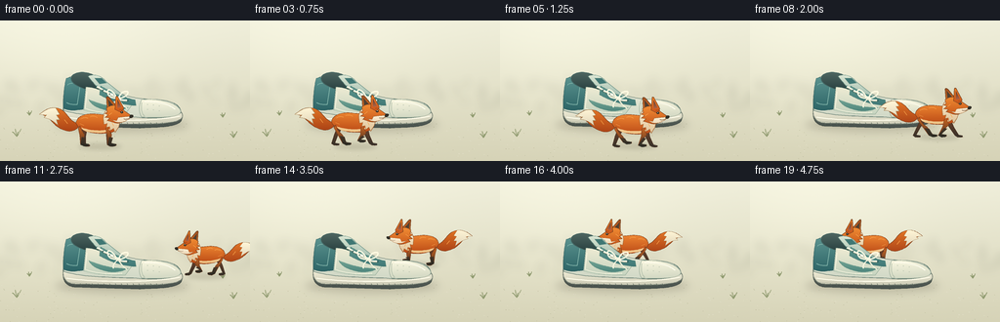
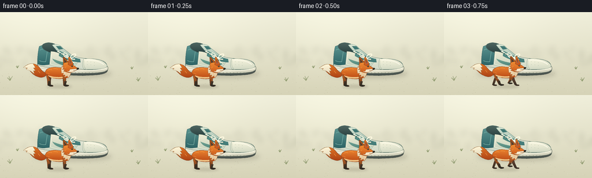

CODING AGENTS AS PIXEL WORLD MODELS
traex/GPT-6.1-Sol · dynamic_spatial_relationship_0028
点击播放 · 原生 RGB 像素
逐轮保存的候选
回放视频、检查图与代码变化。
每份候选均可单独播放。实际图片检查记录在下方工具轨迹中。
候选 01播放与检查图
点击播放 · 原生 RGB 像素


展开代码变化
--- 上一保存版本
+++ 本次保存版本
@@ -0,0 +1,221 @@
+from pathlib import Path
+import json, math
+import numpy as np
+from PIL import Image, ImageDraw, ImageFilter
+import artifact_io
+
+ROOT = Path(__file__).resolve().parent
+SPEC = json.loads((ROOT / 'task_spec.json').read_text())
+W, H = SPEC['width'], SPEC['height']
+S = 4
+SIZE = (W*S,H*S)
+
+def bezier_path(commands):
+ points=[]; current=(0,0)
+ for cmd in commands:
+ if cmd[0]=='M' or cmd[0]=='L':
+ current=tuple(cmd[1:]); points.append(current)
+ elif cmd[0]=='C':
+ p0=np.array(current);p1=np.array(cmd[1:3]);p2=np.array(cmd[3:5]);p3=np.array(cmd[5:7])
+ for t in np.linspace(0,1,24)[1:]:
+ p=(1-t)**3*p0+3*(1-t)**2*t*p1+3*(1-t)*t*t*p2+t**3*p3
+ points.append(tuple(p))
+ current=tuple(p3)
+ elif cmd[0]=='Q':
+ p0=np.array(current);p1=np.array(cmd[1:3]);p2=np.array(cmd[3:5])
+ for t in np.linspace(0,1,18)[1:]:
+ p=(1-t)**2*p0+2*(1-t)*t*p1+t*t*p2;points.append(tuple(p))
+ current=tuple(p2)
+ return points
+
+def line(im, points, color, width=1):
+ ImageDraw.Draw(im).line([(round(x*S),round(y*S)) for x,y in points],fill=color,width=max(1,round(width*S)),joint='curve')
+
+def curve(im, commands, color, width=1):
+ line(im,bezier_path(commands),color,width)
+
+def shape(im, points, top, bottom=None, outline=None, width=.6):
+ pts=[(round(x*S),round(y*S)) for x,y in points]
+ mask=Image.new('L',SIZE);ImageDraw.Draw(mask).polygon(pts,fill=255)
+ if bottom is None: im.paste(top,(0,0),mask)
+ else:
+ x0,y0,x1,y1=mask.getbbox()
+ yy,xx=np.mgrid[y0:y1,x0:x1]
+ q=np.clip((yy-y0)/max(1,y1-y0),0,1)[...,None]
+ a=np.array(top);b=np.array(bottom)
+ rgb=a[None,None,:]*(1-q)+b[None,None,:]*q
+ rgb=np.broadcast_to(rgb,(y1-y0,x1-x0,3)).copy()
+ rgb+=1.5*np.sin(xx[:,:,None]/(18*S))
+ patch=Image.fromarray(np.uint8(np.clip(rgb,0,255)))
+ im.paste(patch,(x0,y0),mask.crop((x0,y0,x1,y1)))
+ if outline:line(im,points+[points[0]],outline,width)
+
+def path(im, commands, *args, **kwargs):
+ shape(im,bezier_path(commands),*args,**kwargs)
+
+def ellipse(im, box, fill, outline=None, width=.6):
+ d=ImageDraw.Draw(im);d.ellipse(tuple(round(x*S) for x in box),fill=fill,outline=outline,width=max(1,round(width*S)))
+
+def shadow(im,box,opacity=40,blur=3):
+ layer=Image.new('RGBA',SIZE);d=ImageDraw.Draw(layer)
+ d.ellipse(tuple(round(x*S) for x in box),fill=(72,63,42,opacity))
+ layer=layer.filter(ImageFilter.GaussianBlur(blur*S));im.paste(layer,(0,0),layer)
+
+def background():
+ yy,xx=np.mgrid[0:H*S,0:W*S];y=yy/S;x=xx/S
+ sky=np.array([239.,238.,218.]);ground=np.array([214.,211.,183.])
+ ratio=np.clip(y/144,0,1)[...,None]
+ arr=sky[None,None,:]*(1-ratio)+ground[None,None,:]*ratio
+ glow=9*np.exp(-((x-65)**2/14000+(y-30)**2/5500))
+ arr+=glow[...,None]
+ rng=np.random.default_rng(21)
+ arr+=rng.normal(0,.35,arr.shape)
+ im=Image.fromarray(np.uint8(np.clip(arr,0,255)))
+ # Far-off grass is soft and low contrast, leaving a clean stage.
+ far=Image.new('RGBA',SIZE)
+ d=ImageDraw.Draw(far)
+ for _ in range(100):
+ x=float(rng.uniform(-10,266));y=float(rng.uniform(67,95));h=float(rng.uniform(2,12))
+ d.line([(int(x*S),int(y*S)),(int((x+rng.uniform(-4,4))*S),int((y-h)*S))],fill=(146,160,123,35),width=2*S)
+ far=far.filter(ImageFilter.GaussianBlur(4*S));im.paste(far,(0,0),far)
+ # Sparse pale texture on the sandy ground.
+ for _ in range(150):
+ x=float(rng.uniform(0,256));y=float(rng.uniform(103,144))
+ c=(193,191,161) if rng.random()<.5 else (228,225,202)
+ ellipse(im,(x,y,x+rng.uniform(.3,1),y+.35),c)
+ for x,y,s in [(17,119,1),(239,120,.8),(30,97,.55),(228,99,.55)]:
+ for k in range(4):
+ curve(im,[('M',x,y),('Q',x+(k-1.5)*1.7*s,y-4*s,x+(k-1.5)*3*s,y-(5+k%2*3)*s)],(143,154,111),.65)
+ return im
+
+
+def shoe(im):
+ # Sole profile: a large stationary ivory-and-teal lace-up sneaker.
+ path(im,[('M',65,91),('C',69,88,83,87,97,89),('L',175,91),('C',184,93,189,97,185,103),('C',180,110,156,109,142,110),('L',76,108),('C',68,107,63,101,65,91)],(113,113,101),(69,80,76),outline=(67,77,71),width=.7)
+ path(im,[('M',65,88),('C',75,89,91,91,106,93),('C',129,95,160,88,178,90),('C',186,92,189,97,185,101),('C',176,106,161,106,140,106),('L',76,105),('C',67,104,63,99,65,88)],(250,246,223),(204,203,182),outline=(115,126,113),width=.65)
+ curve(im,[('M',68,99),('C',93,103,154,104,184,98)],(255,253,235),1.2)
+ curve(im,[('M',70,103),('C',104,106,153,107,181,103)],(163,169,150),.55)
+ for x in range(76,177,6):
+ line(im,[(x,104.6),(x+1,107)],(89,101,90),.45)
+ # Main upper has a tall padded heel at left and a rounded toe at right.
+ path(im,[('M',65,92),('C',64,80,66,66,69,59),('C',79,54,91,55,99,61),('C',103,63,109,68,116,71),('C',127,78,140,80,157,81),('C',174,81,185,86,185,94),('C',182,99,160,101,140,99),('C',113,98,82,98,65,92)],(247,244,224),(207,215,197),outline=(102,126,115),width=.85)
+ # heel counter panel
+ path(im,[('M',68,59),('C',75,57,83,58,88,61),('L',85,91),('C',77,92,71,93,65,90),('C',65,77,66,66,68,59)],(92,148,144),(46,101,103),outline=(57,104,103),width=.6)
+ curve(im,[('M',69,66),('C',72,63,78,64,82,66),('L',79,86),('C',75,86,71,86,68,84)],(129,180,169),.8)
+ # Collar opening and raised tongue.
+ path(im,[('M',73,58),('C',77,50,94,52,104,61),('L',115,73),('C',105,75,88,72,78,66),('C',74,64,72,60,73,58)],(80,103,98),(37,61,61),outline=(68,101,98),width=.8)
+ path(im,[('M',90,57),('C',95,54,104,56,108,62),('L',132,81),('L',115,86),('C',108,78,98,67,90,57)],(222,232,213),(142,175,163),outline=(108,147,135),width=.55)
+ path(im,[('M',97,59),('L',104,59),('L',109,64),('L',102,65)],(63,119,116),outline=(83,130,121),width=.4)
+ # Cream quarter and reinforced turquoise eyestay.
+ path(im,[('M',88,68),('C',95,68,103,71,110,75),('C',118,79,126,83,136,85),('L',128,96),('C',114,96,99,96,86,92),('L',88,68)],(240,237,213),(197,211,191),outline=(156,178,159),width=.55)
+ path(im,[('M',103,67),('C',113,73,127,79,138,81),('L',139,87),('C',125,87,112,82,102,76),('L',103,67)],(97,153,144),(62,119,117),outline=(75,124,114),width=.6)
+ # A curved stitched side panel, no logo/text.
+ path(im,[('M',91,81),('C',104,86,115,89,131,89),('C',126,92,117,94,109,92),('C',100,90,94,87,91,81)],(117,166,150),(77,133,124),outline=(100,148,134),width=.5)
+ # Toe cap visibly rounded and textured.
+ path(im,[('M',145,81),('C',162,79,180,84,184,91),('C',189,99,169,100,145,99),('C',142,94,142,87,145,81)],(249,246,223),(209,215,194),outline=(144,164,147),width=.55)
+ curve(im,[('M',148,83),('C',159,82,175,86,179,91)],(255,253,239),1)
+ curve(im,[('M',145,84),('C',144,91,145,95,148,98)],(179,192,171),.65)
+ for x,y in [(151,86),(157,86.5),(163,87.5),(151,91),(157,91.5),(163,92.5)]:ellipse(im,(x-.4,y-.3,x+.4,y+.3),(180,191,171))
+ # Stitch detail and individually threaded laces.
+ curve(im,[('M',89,73),('L',87,90),('C',102,95,115,95,125,94)],(251,248,226),.7)
+ for k in range(4):
+ lx=99+6.7*k;ly=68+4*k
+ rx=109+7*k;ry=73.5+2.8*k
+ ellipse(im,(lx-1.2,ly-1.2,lx+1.2,ly+1.2),(41,88,85))
+ ellipse(im,(rx-1.2,ry-1.2,rx+1.2,ry+1.2),(40,87,85))
+ curve(im,[('M',lx,ly),('Q',lx+5,ly+2,rx,ry)],(130,145,122),2.1)
+ curve(im,[('M',lx,ly-.4),('Q',lx+5,ly+1.6,rx,ry-.4)],(255,252,231),1.4)
+ if k<3:
+ curve(im,[('M',rx,ry),('L',lx+6.7,ly+4)],(250,248,226),1.35)
+ curve(im,[('M',119,79),('C',115,69,107,69,111,76),('C',112,79,117,79,121,80),('C',132,78,134,71,127,73),('C',123,74,122,78,121,80)],(255,250,226),1.5)
+ curve(im,[('M',121,80),('Q',125,87,130,90)],(241,239,215),1.3)
+ curve(im,[('M',121,80),('Q',115,84,116,89)],(249,246,224),1.3)
+
+
+def fox(im,cx,gy,scale,direction,phase,moving):
+ # Local geometry gives a recognizable natural fox silhouette and running gait.
+ bob=(math.sin(phase*2)*1.5 if moving else math.sin(phase)*.35)
+ def tr(p):return (cx+p[0]*scale*direction,gy+(p[1]+bob)*scale)
+ def P(cmds,top,bottom=None,outline=(123,62,30),width=.65):
+ pts=[tr(p) for p in bezier_path(cmds)];shape(im,pts,top,bottom,outline,width*scale)
+ def C(cmds,col,width=.6):line(im,[tr(p) for p in bezier_path(cmds)],col,width*scale)
+ def E(box,col,outline=None):
+ a=tr((box[0],box[1]));b=tr((box[2],box[3]));ellipse(im,(min(a[0],b[0]),min(a[1],b[1]),max(a[0],b[0]),max(a[1],b[1])),col,outline,width=.5*scale)
+ # Tail swings behind the haunches; the cream tip is large and fluffy.
+ wag=math.sin(phase)*2 if moving else math.sin(phase)*1
+ P([('M',-23,-27),('C',-40,-29,-39,-47+wag,-56,-48+wag),('C',-66,-49+wag,-71,-43+wag,-76,-40+wag),('C',-63,-40+wag,-60,-26,-47,-21),('C',-36,-16,-29,-19,-23,-27)],(225,117,38),(173,68,23))
+ P([('M',-55,-48+wag),('C',-65,-49+wag,-71,-43+wag,-76,-40+wag),('L',-67,-39+wag),('L',-70,-36+wag),('C',-61,-34,-57,-30,-52,-26),('L',-54,-33),('L',-50,-33),('L',-54,-39),('L',-50,-40),('L',-55,-48+wag)],(255,245,214),(227,216,189),outline=(167,134,91),width=.5)
+ # Far legs, followed by rounded warm-red torso.
+ stride=math.sin(phase)*12 if moving else 0
+ stride2=math.sin(phase+math.pi)*11 if moving else 0
+ for hip,step in [(-17,stride2),(15,stride)]:
+ P([('M',hip-4,-23),('L',hip+2,-22),('L',hip+step*.5,-12),('L',hip+step,-2),('L',hip+step+5,-1),('Q',hip+step+7,2,hip+step-1,1),('L',hip+step-4,-1),('L',hip+step*.4-5,-13)],(111,67,43),(52,49,41),outline=(69,45,32),width=.55)
+ P([('M',-29,-29),('C',-27,-40,-13,-42,1,-40),('C',12,-39,23,-38,24,-29),('C',26,-21,20,-16,11,-16),('C',-1,-14,-25,-16,-29,-29)],(235,131,48),(186,73,22))
+ P([('M',-22,-23),('C',-11,-19,8,-17,17,-23),('C',15,-17,4,-15,-8,-17),('C',-15,-17,-21,-19,-22,-23)],(243,208,153),(237,192,129),outline=None)
+ # Near legs have black stockings and small distinct feet.
+ for hip,step in [(-19,stride),(16,stride2)]:
+ lift=max(0,math.cos(phase+(0 if hip<0 else math.pi)))*5 if moving else 0
+ P([('M',hip-5,-25),('C',hip-4,-18,hip+2,-15,hip+step*.45,-12),('L',hip+step,-3-lift),('L',hip+step+6,-2-lift),('Q',hip+step+8,1-lift,hip+step,1-lift),('L',hip+step-4,-1-lift),('L',hip+step*.35-5,-13),('L',hip-7,-22)],(207,104,35),(77,53,36),width=.65)
+ P([('M',hip+step*.4-3,-11),('L',hip+step*.5+2,-10),('L',hip+step,-3-lift),('L',hip+step+6,-2-lift),('Q',hip+step+8,1-lift,hip+step,1-lift),('L',hip+step-4,-1-lift)],(72,55,40),(43,43,36),outline=None)
+ # Neck ruff rises toward the fox's angular, alert face.
+ P([('M',6,-34),('C',6,-43,11,-50,21,-48),('C',28,-47,29,-34,25,-23),('L',21,-17),('L',19,-22),('L',15,-19),('L',14,-24),('L',10,-23),('L',11,-28),('L',7,-27)],(255,239,205),(223,195,154),outline=(164,100,51))
+ # Rear pointed ear.
+ P([('M',11,-45),('L',10,-62),('Q',11,-64,14,-61),('L',24,-49)],(160,80,33),(215,110,33),outline=(100,62,34))
+ P([('M',13,-49),('L',12,-59),('L',19,-51)],(80,64,49),outline=None)
+ # Head, muzzle and foreground ear.
+ P([('M',10,-48),('C',17,-54,28,-52,32,-45),('L',42,-38),('L',39,-34),('C',32,-31,28,-27,20,-29),('L',11,-32),('L',14,-35),('L',8,-36),('L',12,-39),('L',8,-41),('L',11,-43)],(241,141,52),(201,88,27),outline=(123,65,30))
+ P([('M',21,-46),('L',22,-62),('Q',23,-65,25,-61),('L',32,-48),('L',29,-42)],(233,126,42),(199,81,25),outline=(108,61,30))
+ P([('M',24,-48),('L',24,-59),('L',29,-49)],(94,61,43),(180,102,71),outline=None)
+ P([('M',25,-36),('C',30,-37,37,-37,42,-38),('L',39,-34),('C',34,-31,29,-28,22,-30),('L',16,-33),('L',23,-32)],(255,243,217),(237,216,184),outline=(166,111,64),width=.5)
+ # Fine eye and nose make the profile unmistakable.
+ E((27.7,-44,31.1,-41.2),(48,43,33))
+ E((29,-43.5,29.75,-42.6),(254,245,214))
+ P([('M',40,-39),('Q',45,-40,44,-37),('Q',42,-34,39,-36)],(49,46,38),outline=(41,40,32),width=.4)
+ C([('M',39,-34.7),('Q',35,-32.8,32,-34)],(103,73,49),.5)
+ C([('M',27,-46),('Q',29,-47,31,-45.5)],(151,72,29),.6)
+ # Thin, purposeful fur highlights, not noisy outlines.
+ for cmds in [[('M',-23,-34),('Q',-18,-37,-14,-35)],[('M',-11,-37),('Q',-6,-39,-2,-36)],[('M',-24,-28),('L',-19,-26)],[('M',13,-39),('L',17,-42)],[('M',17,-29),('L',19,-25)],[('M',-44,-33),('L',-40,-28)]]:
+ C(cmds,(249,166,77),.6)
+
+# Smooth single trajectory: front of shoe -> right-hand edge -> behind shoe.
+# Cardinal splines avoid cuts and make the route visually continuous.
+KEYS=[(0,101,128),(2,101,128),(6,155,126),(9,207,113),(11,210,96),(14,172,85),(17,121,85),(19,121,85)]
+def position(t):
+ for j in range(len(KEYS)-1):
+ t0,x0,y0=KEYS[j];t1,x1,y1=KEYS[j+1]
+ if t<=t1:
+ u=(t-t0)/(t1-t0)
+ # Hermite derivatives, zero at the standing portions.
+ if j==0 or j==1:m0=np.array([0.,0.])
+ else:m0=(np.array(KEYS[j+1][1:])-np.array(KEYS[j-1][1:]))/(KEYS[j+1][0]-KEYS[j-1][0])*(t1-t0)
+ if j+1>=len(KEYS)-2:m1=np.array([0.,0.])
+ else:m1=(np.array(KEYS[j+2][1:])-np.array(KEYS[j][1:]))/(KEYS[j+2][0]-KEYS[j][0])*(t1-t0)
+ p=(2*u**3-3*u**2+1)*np.array([x0,y0])+(u**3-2*u**2+u)*m0+(-2*u**3+3*u**2)*np.array([x1,y1])+(u**3-u**2)*m1
+ return p
+ return np.array(KEYS[-1][1:])
+
+
+def main():
+ base=background()
+ shadow(base,(57,99,193,114),47,4)
+ shadow(base,(68,102,183,109),43,1.4)
+ frames=[]
+ for i in range(SPEC['frames']):
+ im=base.copy();x,y=position(i)
+ moving=2<i<17
+ phase=(i-2)*2.35 if moving else .5*i
+ # Slight perspective size change as the fox runs away from the camera.
+ scale=.80-(128-y)*.0016
+ direction=1 if i<=10 else -1
+ if i in (10,11):scale*=.94
+ shadow(im,(x-26*scale,y-2,x+29*scale,y+4),38,2.0)
+ if y<106:
+ fox(im,x,y,scale,direction,phase,moving)
+ shoe(im)
+ else:
+ shoe(im)
+ fox(im,x,y,scale,direction,phase,moving)
+ frames.append(np.asarray(im.resize((W,H),Image.Resampling.LANCZOS).convert('RGB'),dtype=np.uint8))
+ artifact_io.save(np.stack(frames),ROOT)
+
+if __name__=='__main__':main()
可观测工具轨迹
实际执行的命令与返回图片。
命令 1exit 0
/bin/bash -lc 'ls -la && cat prompt.txt && cat GENERATION_RULES.md && cat task_spec.json'
命令 2exit 0
/bin/bash -lc "cat artifact_io.py && python - <<'PY'
import PIL,numpy
print('Pillow',PIL.__version__)
PY"命令 3exit 0
/bin/bash -lc "cat > generate.py <<'PY'
from pathlib import Path
import json, math
import numpy as np
from PIL import Image, ImageDraw, ImageFilter
import artifact_io
ROOT = Path(__file__).resolve().parent
SPEC = json.loads((ROOT / 'task_spec.json').read_text())
W, H = SPEC['width'], SPEC['height']
S = 4
SIZE = (W*S,H*S)
def bezier_path(commands):
points=[]; current=(0,0)
for cmd in commands:
if cmd[0]=='M' or cmd[0]=='L':
current=tuple(cmd[1:]); points.append(current)
elif cmd[0]=='C':
p0=np.array(current);p1=np.array(cmd[1:3]);p2=np.array(cmd[3:5]);p3=np.array(cmd[5:7])
for t in np.linspace(0,1,24)[1:]:
p=(1-t)**3*p0+3*(1-t)**2*t*p1+3*(1-t)*t*t*p2+t**3*p3
points.append(tuple(p))
current=tuple(p3)
elif cmd[0]=='Q':
p0=np.array(current);p1=np.array(cmd[1:3]);p2=np.array(cmd[3:5])
for t in np.linspace(0,1,18)[1:]:
p=(1-t)**2*p0+2*(1-t)*t*p1+t*t*p2;points.append(tuple(p))
current=tuple(p2)
return points
def line(im, points, color, width=1):
ImageDraw.Draw(im).line([(round(x*S),round(y*S)) for x,y in points],fill=color,width=max(1,round(width*S)),joint='curve')
def curve(im, commands, color, width=1):
line(im,bezier_path(commands),color,width)
def shape(im, points, top, bottom=None, outline=None, width=.6):
pts=[(round(x*S),round(y*S)) for x,y in points]
mask=Image.new('L',SIZE);ImageDraw.Draw(mask).polygon(pts,fill=255)
if bottom is None: im.paste(top,(0,0),mask)
else:
x0,y0,x1,y1=mask.getbbox()
yy,xx=np.mgrid[y0:y1,x0:x1]
q=np.clip((yy-y0)/max(1,y1-y0),0,1)[...,None]
a=np.array(top);b=np.array(bottom)
rgb=a[None,None,:]*(1-q)+b[None,None,:]*q
rgb=np.broadcast_to(rgb,(y1-y0,x1-x0,3)).copy()
rgb+=1.5*np.sin(xx[:,:,None]/(18*S))
patch=Image.fromarray(np.uint8(np.clip(rgb,0,255)))
im.paste(patch,(x0,y0),mask.crop((x0,y0,x1,y1)))
if outline:line(im,points+[points[0]],outline,width)
def path(im, commands, *args, **kwargs):
shape(im,bezier_path(commands),*args,**kwargs)
def ellipse(im, box, fill, outline=None, width=.6):
d=ImageDraw.Draw(im);d.ellipse(tuple(round(x*S) for x in box),fill=fill,outline=outline,width=max(1,round(width*S)))
def shadow(im,box,opacity=40,blur=3):
layer=Image.new('RGBA',SIZE);d=ImageDraw.Draw(layer)
d.ellipse(tuple(round(x*S) for x in box),fill=(72,63,42,opacity))
layer=layer.filter(ImageFilter.GaussianBlur(blur*S));im.paste(layer,(0,0),layer)
def background():
yy,xx=np.mgrid[0:H*S,0:W*S];y=yy/S;x=xx/S
sky=np.array([239.,238.,218.]);ground=np.array([214.,211.,183.])
ratio=np.clip(y/144,0,1)[...,None]
arr=sky[None,None,:]*(1-ratio)+ground[None,None,:]*ratio
glow=9*np.exp(-((x-65)**2/14000+(y-30)**2/5500))
arr+=glow[...,None]
rng=np.random.default_rng(21)
arr+=rng.normal(0,.35,arr.shape)
im=Image.fromarray(np.uint8(np.clip(arr,0,255)))
# Far-off grass is soft and low contrast, leaving a clean stage.
far=Image.new('RGBA',SIZE)
d=ImageDraw.Draw(far)
for _ in range(100):
x=float(rng.uniform(-10,266));y=float(rng.uniform(67,95));h=float(rng.uniform(2,12))
d.line([(int(x*S),int(y*S)),(int((x+rng.uniform(-4,4))*S),int((y-h)*S))],fill=(146,160,123,35),width=2*S)
far=far.filter(ImageFilter.GaussianBlur(4*S));im.paste(far,(0,0),far)
# Sparse pale texture on the sandy ground.
for _ in range(150):
x=float(rng.uniform(0,256));y=float(rng.uniform(103,144))
c=(193,191,161) if rng.random()<.5 else (228,225,202)
ellipse(im,(x,y,x+rng.uniform(.3,1),y+.35),c)
for x,y,s in [(17,119,1),(239,120,.8),(30,97,.55),(228,99,.55)]:
for k in range(4):
curve(im,[('M',x,y),('Q',x+(k-1.5)*1.7*s,y-4*s,x+(k-1.5)*3*s,y-(5+k%2*3)*s)],(143,154,111),.65)
return im
def shoe(im):
# Sole profile: a large stationary ivory-and-teal lace-up sneaker.
path(im,[('M',65,91),('C',69,88,83,87,97,89),('L',175,91),('C',184,93,189,97,185,103),('C',180,110,156,109,142,110),('L',76,108),('C',68,107,63,101,65,91)],(113,113,101),(69,80,76),outline=(67,77,71),width=.7)
path(im,[('M',65,88),('C',75,89,91,91,106,93),('C',129,95,160,88,178,90),('C',186,92,189,97,185,101),('C',176,106,161,106,140,106),('L',76,105),('C',67,104,63,99,65,88)],(250,246,223),(204,203,182),outline=(115,126,113),width=.65)
curve(im,[('M',68,99),('C',93,103,154,104,184,98)],(255,253,235),1.2)
curve(im,[('M',70,103),('C',104,106,153,107,181,103)],(163,169,150),.55)
for x in range(76,177,6):
line(im,[(x,104.6),(x+1,107)],(89,101,90),.45)
# Main upper has a tall padded heel at left and a rounded toe at right.
path(im,[('M',65,92),('C',64,80,66,66,69,59),('C',79,54,91,55,99,61),('C',103,63,109,68,116,71),('C',127,78,140,80,157,81),('C',174,81,185,86,185,94),('C',182,99,160,101,140,99),('C',113,98,82,98,65,92)],(247,244,224),(207,215,197),outline=(102,126,115),width=.85)
# heel counter panel
path(im,[('M',68,59),('C',75,57,83,58,88,61),('L',85,91),('C',77,92,71,93,65,90),('C',65,77,66,66,68,59)],(92,148,144),(46,101,103),outline=(57,104,103),width=.6)
curve(im,[('M',69,66),('C',72,63,78,64,82,66),('L',79,86),('C',75,86,71,86,68,84)],(129,180,169),.8)
# Collar opening and raised tongue.
path(im,[('M',73,58),('C',77,50,94,52,104,61),('L',115,73),('C',105,75,88,72,78,66),('C',74,64,72,60,73,58)],(80,103,98),(37,61,61),outline=(68,101,98),width=.8)
path(im,[('M',90,57),('C',95,54,104,56,108,62),('L',132,81),('L',115,86),('C',108,78,98,67,90,57)],(222,232,213),(142,175,163),outline=(108,147,135),width=.55)
path(im,[('M',97,59),('L',104,59),('L',109,64),('L',102,65)],(63,119,116),outline=(83,130,121),width=.4)
# Cream quarter and reinforced turquoise eyestay.
path(im,[('M',88,68),('C',95,68,103,71,110,75),('C',118,79,126,83,136,85),('L',128,96),('C',114,96,99,96,86,92),('L',88,68)],(240,237,213),(197,211,191),outline=(156,178,159),width=.55)
path(im,[('M',103,67),('C',113,73,127,79,138,81),('L',139,87),('C',125,87,112,82,102,76),('L',103,67)],(97,153,144),(62,119,117),outline=(75,124,114),width=.6)
# A curved stitched side panel, no logo/text.
path(im,[('M',91,81),('C',104,86,115,89,131,89),('C',126,92,117,94,109,92),('C',100,90,94,87,91,81)],(117,166,150),(77,133,124),outline=(100,148,134),width=.5)
# Toe cap visibly rounded and textured.
path(im,[('M',145,81),('C',162,79,180,84,184,91),('C',189,99,169,100,145,99),('C',142,94,142,87,145,81)],(249,246,223),(209,215,194),outline=(144,164,147),width=.55)
curve(im,[('M',148,83),('C',159,82,175,86,179,91)],(255,253,239),1)
curve(im,[('M',145,84),('C',144,91,145,95,148,98)],(179,192,171),.65)
for x,y in [(151,86),(157,86.5),(163,87.5),(151,91),(157,91.5),(163,92.5)]:ellipse(im,(x-.4,y-.3,x+.4,y+.3),(180,191,171))
# Stitch detail and individually threaded laces.
curve(im,[('M',89,73),('L',87,90),('C',102,95,115,95,125,94)],(251,248,226),.7)
for k in range(4):
lx=99+6.7*k;ly=68+4*k
rx=109+7*k;ry=73.5+2.8*k
ellipse(im,(lx-1.2,ly-1.2,lx+1.2,ly+1.2),(41,88,85))
ellipse(im,(rx-1.2,ry-1.2,rx+1.2,ry+1.2),(40,87,85))
curve(im,[('M',lx,ly),('Q',lx+5,ly+2,rx,ry)],(130,145,122),2.1)
curve(im,[('M',lx,ly-.4),('Q',lx+5,ly+1.6,rx,ry-.4)],(255,252,231),1.4)
if k<3:
curve(im,[('M',rx,ry),('L',lx+6.7,ly+4)],(250,248,226),1.35)
curve(im,[('M',119,79),('C',115,69,107,69,111,76),('C',112,79,117,79,121,80),('C',132,78,134,71,127,73),('C',123,74,122,78,121,80)],(255,250,226),1.5)
curve(im,[('M',121,80),('Q',125,87,130,90)],(241,239,215),1.3)
curve(im,[('M',121,80),('Q',115,84,116,89)],(249,246,224),1.3)
def fox(im,cx,gy,scale,direction,phase,moving):
# Local geometry gives a recognizable natural fox silhouette and running gait.
bob=(math.sin(phase*2)*1.5 if moving else math.sin(phase)*.35)
def tr(p):return (cx+p[0]*scale*direction,gy+(p[1]+bob)*scale)
def P(cmds,top,bottom=None,outline=(123,62,30),width=.65):
pts=[tr(p) for p in bezier_path(cmds)];shape(im,pts,top,bottom,outline,width*scale)
def C(cmds,col,width=.6):line(im,[tr(p) for p in bezier_path(cmds)],col,width*scale)
def E(box,col,outline=None):
a=tr((box[0],box[1]));b=tr((box[2],box[3]));ellipse(im,(min(a[0],b[0]),min(a[1],b[1]),max(a[0],b[0]),max(a[1],b[1])),col,outline,width=.5*scale)
# Tail swings behind the haunches; the cream tip is large and fluffy.
wag=math.sin(phase)*2 if moving else math.sin(phase)*1
P([('M',-23,-27),('C',-40,-29,-39,-47+wag,-56,-48+wag),('C',-66,-49+wag,-71,-43+wag,-76,-40+wag),('C',-63,-40+wag,-60,-26,-47,-21),('C',-36,-16,-29,-19,-23,-27)],(225,117,38),(173,68,23))
P([('M',-55,-48+wag),('C',-65,-49+wag,-71,-43+wag,-76,-40+wag),('L',-67,-39+wag),('L',-70,-36+wag),('C',-61,-34,-57,-30,-52,-26),('L',-54,-33),('L',-50,-33),('L',-54,-39),('L',-50,-40),('L',-55,-48+wag)],(255,245,214),(227,216,189),outline=(167,134,91),width=.5)
# Far legs, followed by rounded warm-red torso.
stride=math.sin(phase)*12 if moving else 0
stride2=math.sin(phase+math.pi)*11 if moving else 0
for hip,step in [(-17,stride2),(15,stride)]:
P([('M',hip-4,-23),('L',hip+2,-22),('L',hip+step*.5,-12),('L',hip+step,-2),('L',hip+step+5,-1),('Q',hip+step+7,2,hip+step-1,1),('L',hip+step-4,-1),('L',hip+step*.4-5,-13)],(111,67,43),(52,49,41),outline=(69,45,32),width=.55)
P([('M',-29,-29),('C',-27,-40,-13,-42,1,-40),('C',12,-39,23,-38,24,-29),('C',26,-21,20,-16,11,-16),('C',-1,-14,-25,-16,-29,-29)],(235,131,48),(186,73,22))
P([('M',-22,-23),('C',-11,-19,8,-17,17,-23),('C',15,-17,4,-15,-8,-17),('C',-15,-17,-21,-19,-22,-23)],(243,208,153),(237,192,129),outline=None)
# Near legs have black stockings and small distinct feet.
for hip,step in [(-19,stride),(16,stride2)]:
lift=max(0,math.cos(phase+(0 if hip<0 else math.pi)))*5 if moving else 0
P([('M',hip-5,-25),('C',hip-4,-18,hip+2,-15,hip+step*.45,-12),('L',hip+step,-3-lift),('L',hip+step+6,-2-lift),('Q',hip+step+8,1-lift,hip+step,1-lift),('L',hip+step-4,-1-lift),('L',hip+step*.35-5,-13),('L',hip-7,-22)],(207,104,35),(77,53,36),width=.65)
P([('M',hip+step*.4-3,-11),('L',hip+step*.5+2,-10),('L',hip+step,-3-lift),('L',hip+step+6,-2-lift),('Q',hip+step+8,1-lift,hip+step,1-lift),('L',hip+step-4,-1-lift)],(72,55,40),(43,43,36),outline=None)
# Neck ruff rises toward the fox's angular, alert face.
P([('M',6,-34),('C',6,-43,11,-50,21,-48),('C',28,-47,29,-34,25,-23),('L',21,-17),('L',19,-22),('L',15,-19),('L',14,-24),('L',10,-23),('L',11,-28),('L',7,-27)],(255,239,205),(223,195,154),outline=(164,100,51))
# Rear pointed ear.
P([('M',11,-45),('L',10,-62),('Q',11,-64,14,-61),('L',24,-49)],(160,80,33),(215,110,33),outline=(100,62,34))
P([('M',13,-49),('L',12,-59),('L',19,-51)],(80,64,49),outline=None)
# Head, muzzle and foreground ear.
P([('M',10,-48),('C',17,-54,28,-52,32,-45),('L',42,-38),('L',39,-34),('C',32,-31,28,-27,20,-29),('L',11,-32),('L',14,-35),('L',8,-36),('L',12,-39),('L',8,-41),('L',11,-43)],(241,141,52),(201,88,27),outline=(123,65,30))
P([('M',21,-46),('L',22,-62),('Q',23,-65,25,-61),('L',32,-48),('L',29,-42)],(233,126,42),(199,81,25),outline=(108,61,30))
P([('M',24,-48),('L',24,-59),('L',29,-49)],(94,61,43),(180,102,71),outline=None)
P([('M',25,-36),('C',30,-37,37,-37,42,-38),('L',39,-34),('C',34,-31,29,-28,22,-30),('L',16,-33),('L',23,-32)],(255,243,217),(237,216,184),outline=(166,111,64),width=.5)
# Fine eye and nose make the profile unmistakable.
E((27.7,-44,31.1,-41.2),(48,43,33))
E((29,-43.5,29.75,-42.6),(254,245,214))
P([('M',40,-39),('Q',45,-40,44,-37),('Q',42,-34,39,-36)],(49,46,38),outline=(41,40,32),width=.4)
C([('M',39,-34.7),('Q',35,-32.8,32,-34)],(103,73,49),.5)
C([('M',27,-46),('Q',29,-47,31,-45.5)],(151,72,29),.6)
# Thin, purposeful fur highlights, not noisy outlines.
for cmds in [[('M',-23,-34),('Q',-18,-37,-14,-35)],[('M',-11,-37),('Q',-6,-39,-2,-36)],[('M',-24,-28),('L',-19,-26)],[('M',13,-39),('L',17,-42)],[('M',17,-29),('L',19,-25)],[('M',-44,-33),('L',-40,-28)]]:
C(cmds,(249,166,77),.6)
# Smooth single trajectory: front of shoe -> right-hand edge -> behind shoe.
# Cardinal splines avoid cuts and make the route visually continuous.
KEYS=[(0,101,128),(2,101,128),(6,155,126),(9,207,113),(11,210,96),(14,172,85),(17,121,85),(19,121,85)]
def position(t):
for j in range(len(KEYS)-1):
t0,x0,y0=KEYS[j];t1,x1,y1=KEYS[j+1]
if t<=t1:
u=(t-t0)/(t1-t0)
# Hermite derivatives, zero at the standing portions.
if j==0 or j==1:m0=np.array([0.,0.])
else:m0=(np.array(KEYS[j+1][1:])-np.array(KEYS[j-1][1:]))/(KEYS[j+1][0]-KEYS[j-1][0])*(t1-t0)
if j+1>=len(KEYS)-2:m1=np.array([0.,0.])
else:m1=(np.array(KEYS[j+2][1:])-np.array(KEYS[j][1:]))/(KEYS[j+2][0]-KEYS[j][0])*(t1-t0)
p=(2*u**3-3*u**2+1)*np.array([x0,y0])+(u**3-2*u**2+u)*m0+(-2*u**3+3*u**2)*np.array([x1,y1])+(u**3-u**2)*m1
return p
return np.array(KEYS[-1][1:])
def main():
base=background()
shadow(base,(57,99,193,114),47,4)
shadow(base,(68,102,183,109),43,1.4)
frames=[]
for i in range(SPEC['frames']):
im=base.copy();x,y=position(i)
moving=2<i<17
phase=(i-2)*2.35 if moving else .5*i
# Slight perspective size change as the fox runs away from the camera.
scale=.80-(128-y)*.0016
direction=1 if i<=10 else -1
if i in (10,11):scale*=.94
shadow(im,(x-26*scale,y-2,x+29*scale,y+4),38,2.0)
if y<106:
fox(im,x,y,scale,direction,phase,moving)
shoe(im)
else:
shoe(im)
fox(im,x,y,scale,direction,phase,moving)
frames.append(np.asarray(im.resize((W,H),Image.Resampling.LANCZOS).convert('RGB'),dtype=np.uint8))
artifact_io.save(np.stack(frames),ROOT)
if __name__=='__main__':main()
PY
python generate.py
ls -lh pixels.npz index.html inspection.png frames/00.png frames/19.png"命令 4exit 0
/bin/bash -lc "command -v ffmpeg; python - <<'PY'
import numpy as np
from pathlib import Path
from PIL import Image
p=np.load('pixels.npz')['pixels']
assert p.shape==(144,256,20)
for f in sorted(Path('frames').glob('*.png')):
im=Image.open(f);assert im.size==(256,144) and im.mode=='RGB'
print('Validated 20 RGB frames at 256 Ã 144.')
PY"保存候选 1 份；完成命令 4 次；可验证图片返回 0 张。原始 API 响应与完整日志保留在本地。